Richard Waterman
September 2026
import os
import pandas as pd
import matplotlib.pyplot as plt
import seaborn as sns
from sklearn import tree
import numpy as np
import warnings
warnings.filterwarnings('ignore')
os.chdir('C:\\Users\\water\\Dropbox (Penn)\\Richard\\Teaching\\7770f2026_Q1\\DataSets')
example_data = pd.read_csv("tree_algo.csv")print(example_data.info()) # Summarizing the dataset with the ".info()" method
print(example_data.head(3))<class 'pandas.core.frame.DataFrame'>
RangeIndex: 101 entries, 0 to 100
Data columns (total 2 columns):
# Column Non-Null Count Dtype
--- ------ -------------- -----
0 y 101 non-null float64
1 x 101 non-null int64
dtypes: float64(1), int64(1)
memory usage: 1.7 KB
None
y x
0 0.296105 0
1 0.019676 1
2 0.441736 2
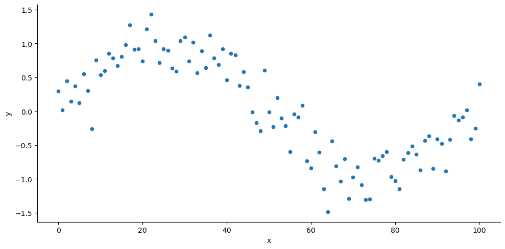
X = example_data[['x']] # Two brackets [[ ]] is important here because the X-variable needs to be matrix like.
y = example_data['y']
regtree = tree.DecisionTreeRegressor(max_leaf_nodes = 2) # Make a single split to match the "Decision Tree" notes.
regtree.fit(X, y)
plt.figure(figsize=(5,3))
tree.plot_tree(regtree, filled=True, feature_names=list(X.columns));
pass
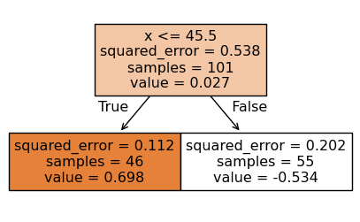
xpred = pd.DataFrame(np.arange(0,101).reshape(-1, 1)) # The "-1" argument says infer the dimension from the input data.
xpred.columns = ['x']
preds = regtree.predict(X=xpred)
plt.figure(figsize=(5,3))
sns.lineplot(x = xpred['x'], y = preds);
pass
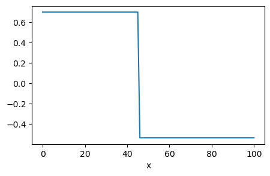
regtree = tree.DecisionTreeRegressor(max_depth = 4) # Allow a depth of at most 4.
regtree.fit(X, y)
preds = regtree.predict(xpred)
plt.figure(figsize=(5,3))
sns.lineplot(x = xpred['x'], y = preds);
pass
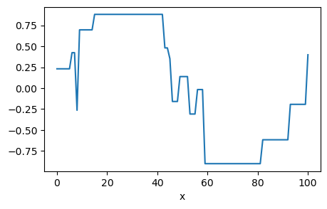
carTable = pd.read_csv("Car08_just_499.csv")
# Pull off the continuous variables first.
Xcts = carTable[['Weight(lb)', 'Seating', 'Horsepower', 'HP/Pound', 'Displacement', 'Cylinders', 'Length']]
# Deal with the categorical predictors by making then into dummy variables using "get_dummies".
Xcat = pd.get_dummies(carTable[['Transmission', 'EPA_Class','HEV', 'Turbocharger']]) # Categorical variables.
# Merge the continuous and categorical variables to a single dataset.
X = pd.merge(Xcts, Xcat, left_index=True, right_index=True)
y = carTable['GP1000M_City'] Weight(lb) Seating Horsepower HP/Pound Displacement Cylinders Length \
0 4014 5 290 0.072247 3.5 6 193.6
1 3674 5 286 0.077844 3.5 6 189.3
2 3559 5 286 0.080360 3.5 6 189.3
3 3345 5 205 0.061285 2.4 4 186.2
4 3257 5 205 0.062941 2.4 4 186.2
Transmission_A Transmission_AS Transmission_AV ... \
0 False True False ...
1 False True False ...
2 False False False ...
3 False True False ...
4 False False False ...
EPA_Class_minicompact EPA_Class_minivan EPA_Class_smallwagon \
0 False False False
1 False False False
2 False False False
3 False False False
4 False False False
EPA_Class_subcompact EPA_Class_suv2 EPA_Class_suv4 HEV_no HEV_yes \
0 False False False True False
1 False False False True False
2 False False False True False
3 False False False True False
4 False False False True False
Turbocharger_no Turbocharger_yes
0 True False
1 True False
2 True False
3 True False
4 True False
[5 rows x 26 columns]regtree = tree.DecisionTreeRegressor(max_leaf_nodes = 10) # Set up the tree structure.
regtree.fit(X, y) # Fit the tree.
fig = plt.figure(num=None, figsize=(12, 8), dpi=80, facecolor='w', edgecolor='k')
tree.plot_tree(regtree, filled=True, feature_names=list(X.columns));
pass
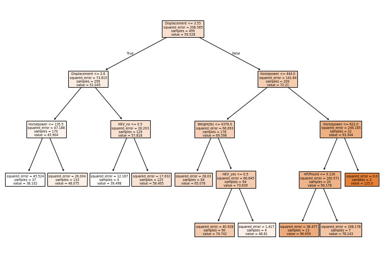
# Break the data in 2 parts randomly
from sklearn.model_selection import train_test_split
X_train, X_test, y_train, y_test = train_test_split(X, y, test_size = 0.5, random_state=1) # A 50/50 split.
# Confirm that this has worked.
print(X_train.shape)
print(X_test.shape)(249, 26)
(250, 26)# These are matplotlib plotting functions.
fig, ax = plt.subplots()
ax.plot(ccp_alphas[:-1], impurities[:-1], marker='o', drawstyle="steps-post")
ax.set_xlabel("Effective alpha")
ax.set_ylabel("Total impurity of leaves")
ax.set_title("Total Impurity vs effective alpha for training set");
pass
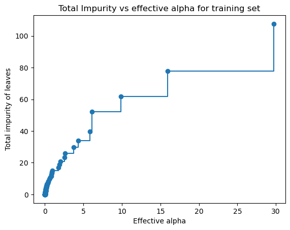
rgrs = [] # A container for the trees along the pruning path.
for ccp_alpha in ccp_alphas: # A for loop, fitting a tree for each value of alpha
dtr = tree.DecisionTreeRegressor(random_state=0, ccp_alpha=ccp_alpha)
dtr.fit(X_train, y_train)
rgrs.append(dtr)
print("Number of nodes in the last tree is: {} with ccp_alpha: {}".format(
rgrs[-1].tree_.node_count, ccp_alphas[-1]))Number of nodes in the last tree is: 1 with ccp_alpha: 107.31669971836459fig, ax = plt.subplots(1, 2, figsize=(8,2))
ax[0].plot(ccp_alphas, node_counts, marker='o', drawstyle="steps-post")
ax[0].set_xlabel("alpha")
ax[0].set_ylabel("Number of nodes")
ax[0].set_title("Number of nodes vs alpha")
ax[1].plot(ccp_alphas, depth, marker='o', drawstyle="steps-post")
ax[1].set_xlabel("alpha")
ax[1].set_ylabel("Depth of tree")
ax[1].set_title("Depth vs alpha")
pass
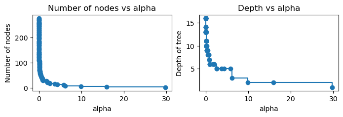
fig, ax = plt.subplots(figsize=(8, 3))
ax.set_xlabel("alpha")
ax.set_ylabel("Accuracy: R-squared")
ax.set_title("Accuracy vs alpha for training and testing sets")
ax.plot(ccp_alphas, train_scores, marker='o', label="train",
drawstyle="steps-post")
ax.plot(ccp_alphas, test_scores, marker='x', label="test",
drawstyle="steps-post")
ax.legend()
plt.show()
pass
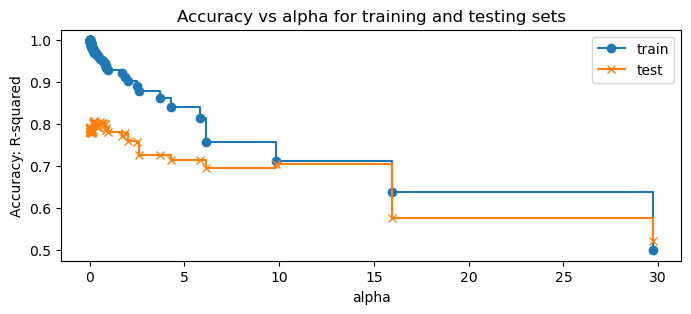
best = pd.Series(test_scores).idxmax() # Find the index of the best tree.
ccp_alphas[best] # Here's the best tree's value of "alpha".
np.float64(0.24641228297695494)best_tree = rgrs[best] # Pull out the best tree from the pruning path.
fig = plt.figure(num=None, figsize=(12, 9), dpi=80, facecolor='w', edgecolor='k')
tree.plot_tree(best_tree, filled=True, feature_names=list(X.columns));
pass
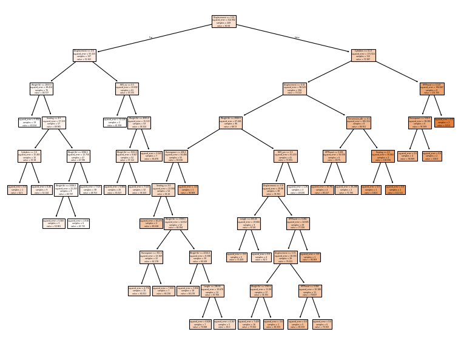
importances = pd.DataFrame({'Feature':X_train.columns,'Importance':np.round(best_tree.feature_importances_,3)})
importances = importances.sort_values('Importance',ascending=False)
print(importances[:5]) # Top five variables. Feature Importance
4 Displacement 0.652
5 Cylinders 0.144
0 Weight(lb) 0.067
3 HP/Pound 0.038
23 HEV_yes 0.035op_data = pd.read_csv("no_show_behavioral_20000.csv") # Read in data.
op_data['Age'] = pd.to_numeric(op_data['Age'],errors='coerce') # Clean up Age.
op_data = op_data.dropna() # Remove rows with missing values.
# Get the continous variables.
Xcts = op_data[['Age', 'Schedule lag', 'Minutes', 'Prior no show', 'Prior arrived']]
# "Binarize" the categorical variables.
Xcat = pd.get_dummies(op_data[['Sex', 'Marital status', 'Race', 'LanguageRecode',
'Department', 'Insurance type']]) # Categorical variables.X = pd.merge(Xcts, Xcat,left_index=True, right_index=True) # Join the two data frames.
y = op_data['Status'] # Identify the y-variable.
print(X.head(5)) Age Schedule lag Minutes Prior no show Prior arrived Sex_FEMALE \
0 52.0 24 45 0 0 False
1 49.0 35 10 0 3 True
2 37.0 46 45 0 0 True
3 31.0 3 20 1 0 True
4 62.0 30 15 0 2 False
Sex_MALE Marital status_DIVORCED Marital status_LIFE PARTNER \
0 True False False
1 False False False
2 False False False
3 False False False
4 True False False
Marital status_MARRIED ... Insurance type_COMMERCIAL \
0 False ... False
1 False ... False
2 False ... False
3 False ... False
4 False ... False
Insurance type_DENTAL Insurance type_HMO/POS Insurance type_MANAGED CARE \
0 False False False
1 False False True
2 False True False
3 False False False
4 False False False
Insurance type_MANAGED MEDICAID Insurance type_MANAGED MEDICARE \
0 False True
1 False False
2 False False
3 True False
4 True False
Insurance type_MEDICAID Insurance type_MEDICARE Insurance type_SELF PAY \
0 False False False
1 False False False
2 False False False
3 False False False
4 False False False
Insurance type_Unclassified
0 False
1 False
2 False
3 False
4 False
[5 rows x 72 columns]# Create the train/test split. Make sure you set a seed.
X_train, X_test, y_train, y_test = train_test_split(X, y, test_size=0.5, random_state=1) # A 50/50 split.
print(X_train.shape)
print(X_test.shape)(9995, 72)
(9996, 72)clf = tree.DecisionTreeClassifier(criterion="entropy", max_leaf_nodes=10, random_state=0) # Set up the tree.
clf.fit(X_train, y_train) # Fit the tree.
fig = plt.figure(num=None, figsize=(30, 15), dpi=160, facecolor='w', edgecolor='k')
tree.plot_tree(clf, filled=True, feature_names=list(X.columns),proportion=True);
pass
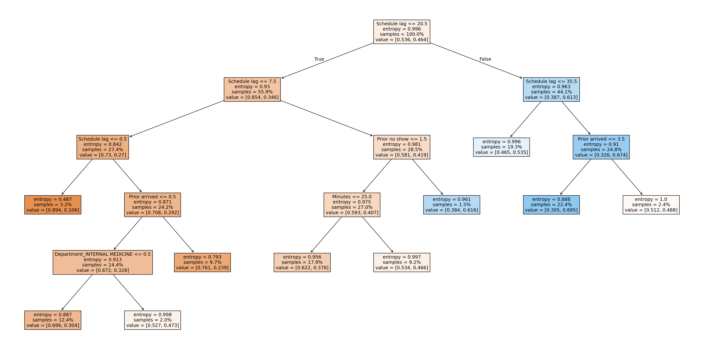
importances = pd.DataFrame({'feature':X_train.columns,'importance':np.round(clf.feature_importances_,3)})
importances = importances.sort_values('importance',ascending=False)
print(importances[:5]) # Top 5 variables. feature importance
1 Schedule lag 0.887
4 Prior arrived 0.055
3 Prior no show 0.022
47 Department_INTERNAL MEDICINE 0.019
2 Minutes 0.017| Classify Arrived | Classify No show | Total | ||
|---|---|---|---|---|
| True state | Arrived | 3753 | 1756 | 5509 |
| No show | 1918 | 2569 | 4487 |
# Summarize the fit.
# Confusion matrix.
from sklearn.metrics import confusion_matrix, ConfusionMatrixDisplay
y_pred = clf.predict(X_test) # The predict method will classify the observation
cm = confusion_matrix(y_test, y_pred) # Cross-classify the "truth" against the "predictions".
print(cm)[[3753 1756]
[1918 2569]]
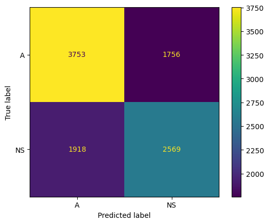
y_prob_pred = clf.predict_proba(X_test) # The predict_proba method will return the predicted probability.
y_pred = np.where(y_prob_pred[:,1] > 0.25, "NS", "A") # From numpy, classify according to the predicted probability.
#y_pred = ["NS" if (x > 0.25) else "A" for x in y_prob_pred[:,1]] # We could use a list comprehension as well.
cm = confusion_matrix(y_test, y_pred)
print(cm)
[[1014 4495]
[ 272 4215]]| Classify Arrived | Classify No show | Total | ||
|---|---|---|---|---|
| True state | Arrived | 1014 | 4495 | 5509 |
| No show | 272 | 4215 | 4487 |
from sklearn.metrics import roc_auc_score, RocCurveDisplay
y_pred = clf.predict_proba(X_test) # Get the predicted probablities.
print(roc_auc_score(y_test, y_pred[:, 1])) # Obtain the AUC.
RocCurveDisplay.from_predictions(y_test, y_pred[:, 1], pos_label='NS'); # Plot the curve
pass0.6747078943656152
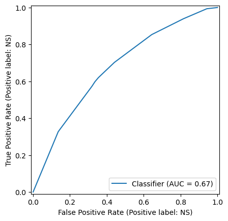
y_pred = rf.predict_proba(X_test) # Predict the probabilities.
print(roc_auc_score(y_test, y_pred[:, 1])) # Print out the AUC.
RocCurveDisplay.from_predictions(y_test, y_pred[:, 1], pos_label='NS');
pass0.6689822311145693
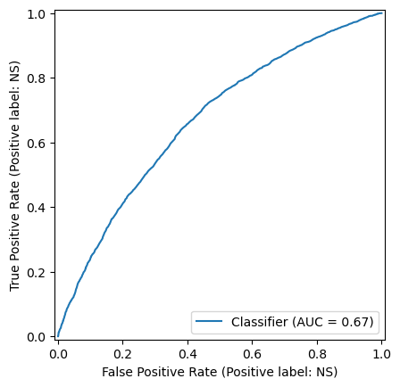
from sklearn.model_selection import GridSearchCV
rf = RandomForestClassifier(n_estimators = 150,
criterion = "entropy",
max_depth=None,
max_features="auto",
bootstrap=True,
n_jobs=1,
random_state=0)
parameters = {'n_estimators':[100,200,300],'max_depth':[5,10,15],
'max_features':[5,10,20],'criterion':['entropy','gini']}
# Test the code quickly with the small experiment below.
# parameters = {'n_estimators':[50,100],'max_depth':[2], 'max_features':[1], 'criterion':['entropy']}
print(parameters){'n_estimators': [100, 200, 300], 'max_depth': [5, 10, 15], 'max_features': [5, 10, 20], 'criterion': ['entropy', 'gini']}clf = GridSearchCV(rf, parameters) # Run the computer experiment on the tuning parameters.
clf.fit(X_train, y_train)
clf.best_params_ # Have a look at the best parameter values.{'criterion': 'entropy',
'max_depth': 10,
'max_features': 20,
'n_estimators': 300}exp_results = pd.DataFrame(clf.cv_results_) # This saves all the results into a pandas data frame.
print(exp_results.head(5)) mean_fit_time std_fit_time mean_score_time std_score_time \
0 0.216209 0.001490 0.012136 0.000189
1 0.415532 0.001928 0.020343 0.000267
2 0.623575 0.004016 0.029698 0.000583
3 0.285812 0.004695 0.012731 0.000538
4 0.570524 0.005986 0.021670 0.000698
param_criterion param_max_depth param_max_features param_n_estimators \
0 entropy 5 5 100
1 entropy 5 5 200
2 entropy 5 5 300
3 entropy 5 10 100
4 entropy 5 10 200
params split0_test_score \
0 {'criterion': 'entropy', 'max_depth': 5, 'max_... 0.616808
1 {'criterion': 'entropy', 'max_depth': 5, 'max_... 0.630315
2 {'criterion': 'entropy', 'max_depth': 5, 'max_... 0.624812
3 {'criterion': 'entropy', 'max_depth': 5, 'max_... 0.644322
4 {'criterion': 'entropy', 'max_depth': 5, 'max_... 0.636818
split1_test_score split2_test_score split3_test_score split4_test_score \
0 0.618809 0.611306 0.634317 0.602301
1 0.619310 0.609305 0.639320 0.615308
2 0.623812 0.610305 0.637319 0.622811
3 0.659330 0.630315 0.647824 0.636818
4 0.657829 0.626313 0.649325 0.636318
mean_test_score std_test_score rank_test_score
0 0.616708 0.010500 54
1 0.622711 0.010768 52
2 0.623812 0.008566 51
3 0.643722 0.009881 35
4 0.641321 0.011019 43 sns.catplot(y='mean_test_score', x='param_max_depth', data=exp_results, col='param_n_estimators',
row='param_max_features', hue='param_criterion');
pass
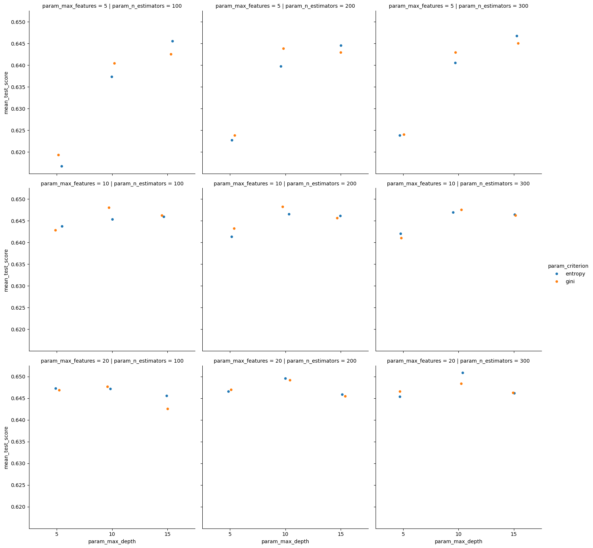
y_pred = clf.predict_proba(X_test)
RocCurveDisplay.from_predictions(y_test, y_pred[:, 1], pos_label='NS')
print(roc_auc_score(y_test, y_pred[:, 1]))0.6973479343706591
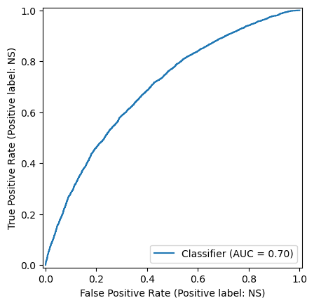